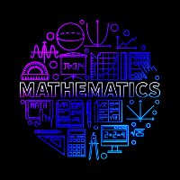

Daftar Isi
- Pythagoras
- Euclid
- Archimdes
- Leonardo Fibonacci
- Isaac Newton
- Leonhard Euler
- Carl Friedrich Gauss
- Georg Cantor
- Alan Turing
Hubungi Admin


JAM
lainnya
10 tokoh berpengaruh dalam matematika
Prakata
Mengenal tokoh-tokoh matematika merupakan langkah penting dalam memahami sejarah dan signifikansi ilmu matematika. Para tokoh ini bukan hanya sekadar nama-nama, tetapi juga representasi inspiratif dari ketekunan, kreativitas, dan keberanian dalam mengeksplorasi dunia angka dan pola. Melalui mempelajari kisah-kisah mereka, kita memperoleh wawasan tentang bagaimana ide-ide revolusioner terbentuk, mengapa teori-teori tersebut begitu relevan hingga kini, serta bagaimana kontribusi mereka telah membentuk perkembangan ilmu pengetahuan secara keseluruhan. Dengan mengenal tokoh-tokoh matematika, kita juga memperoleh inspirasi untuk menjembatani kesenjangan antara masa lalu dan masa depan, mendorong semangat penemuan baru, dan mengaplikasikan prinsip-prinsip matematika dalam berbagai aspek kehidupan modern.
Apa itu Matematika?
Matematika adalah ilmu yang berkaitan dengan pengembangan konsep, struktur, dan pola berdasarkan logika dan deduksi. Ini melibatkan studi tentang angka, ruang, besaran, struktur, dan perubahan. Matematika menjadi dasar bagi pemahaman dalam berbagai disiplin ilmu dan memiliki peran penting dalam memecahkan masalah, meramalkan fenomena alam, serta mengembangkan teknologi. Secara lebih mendalam, matematika melibatkan berbagai cabang, termasuk: Aritmetika: Studi tentang angka dan operasi dasar seperti penjumlahan, pengurangan, perkalian, dan pembagian. Aljabar: Mempelajari hubungan antara angka dan besaran dalam bentuk simbolik. Aljabar melibatkan persamaan, ketidaksetaraan, dan manipulasi aljabar untuk memecahkan masalah matematika yang lebih kompleks. Geometri: Studi tentang sifat-sifat dan hubungan dalam bentuk dan ukuran ruang. Geometri melibatkan bidang, bangun ruang, transformasi geometris, dan topologi. Kalkulus: Menyelidiki perubahan dan perhitungan yang berhubungan dengan fungsi dan limit. Kalkulus memiliki dua cabang utama: kalkulus diferensial (mempelajari perubahan instan) dan kalkulus integral (mempelajari akumulasi dan luas di bawah kurva). Statistika: Mengumpulkan, menganalisis, dan menafsirkan data untuk membuat keputusan berdasarkan pola dan tren yang ditemukan. Statistika membantu dalam membuat inferensi dan prediksi tentang fenomena di dunia nyata. Teori Bilangan: Memfokuskan pada sifat-sifat angka bulat dan hubungan di antara mereka, termasuk pembagian, faktorisasi, dan bilangan prima. Teori Kombinatorial: Mempelajari penghitungan dan penggabungan objek-objek dalam berbagai pola dan konfigurasi. Teori Graf: Mempelajari struktur graf dan hubungan antara simpul dan tepi dalam jaringan atau rangkaian. Teori Probabilitas: Menyelidiki peluang dan kemungkinan terjadinya berbagai hasil dalam situasi acak. Matematika Diskret: Mempelajari objek matematika yang terpisah dan diskrit, seperti bilangan bulat, himpunan terbatas, dan teori graf.